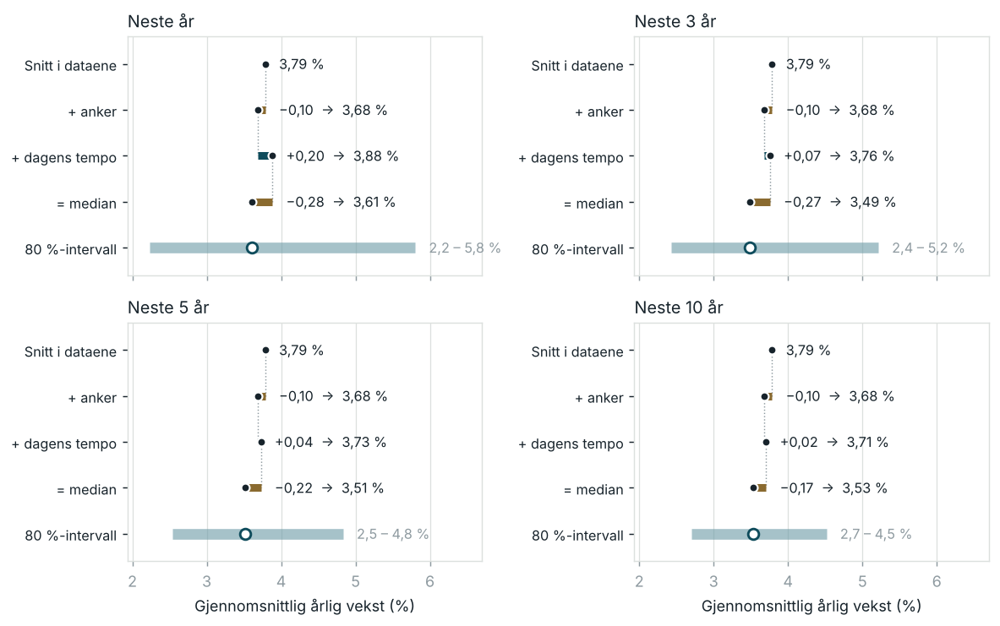
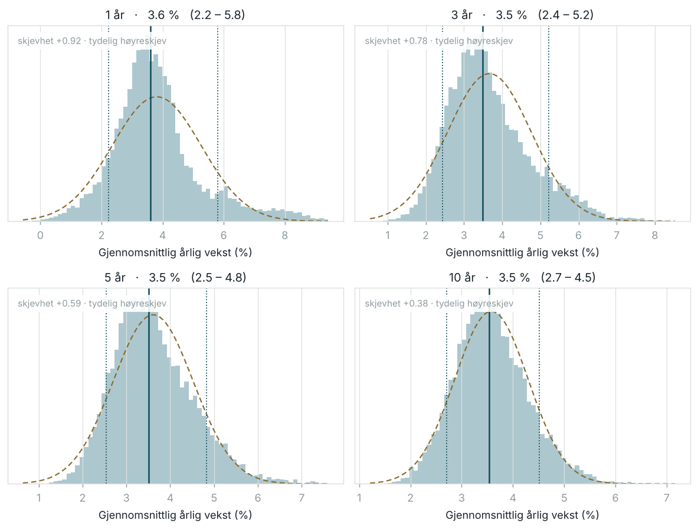
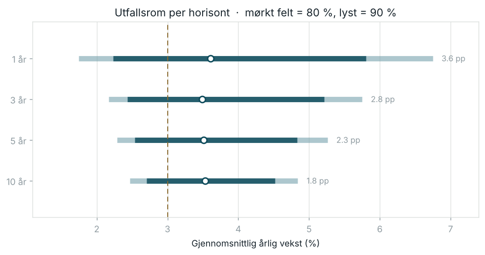
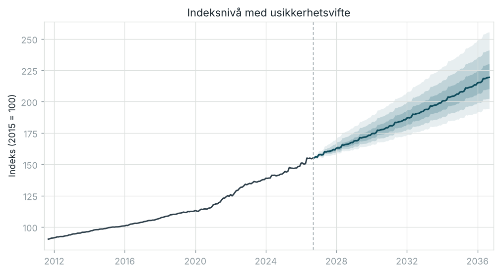
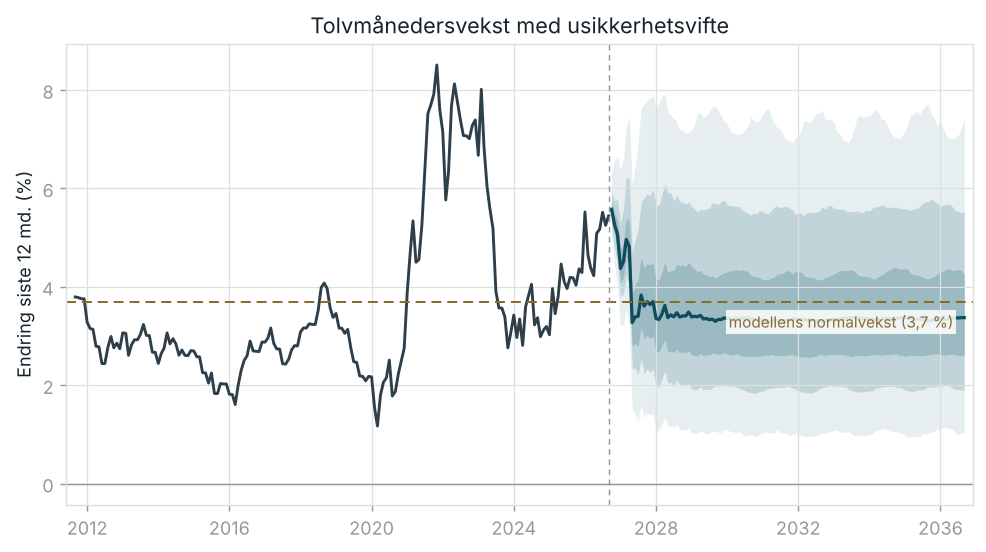
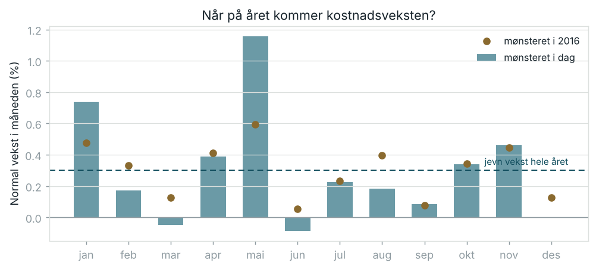
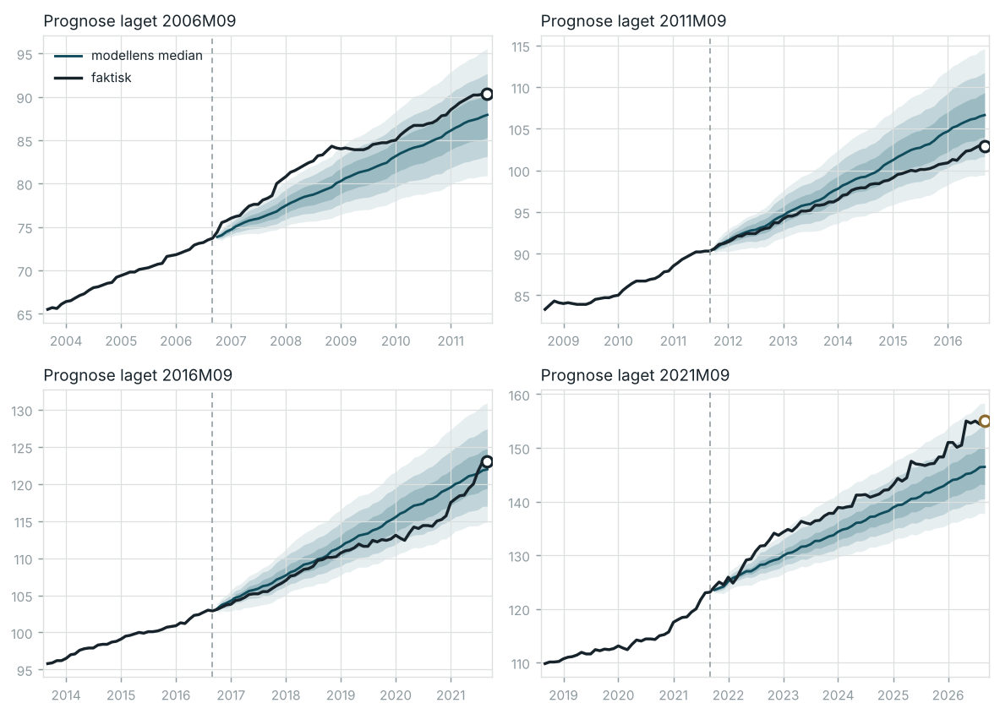
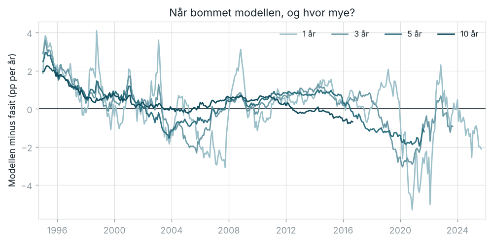
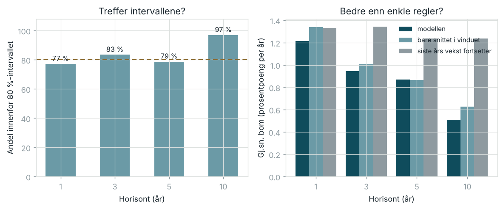

Prognose for gjennomsnittlig årlig kostnadsvekst
Oppdatert 12.11.2026 · siste observasjon 2026M09 · indeks 155,0 · siste 12 md. +5,4 %
Midttallet er medianen: halvparten av de simulerte utfallene ligger over, halvparten under. Stolpen viser 80 prosent-intervallet: ett av ti utfall havner under, ett av ti over. «Effekt av siste måned» er hvor mye den nyeste observasjonen alene flyttet anslaget.
Modellen venter at byggekostnadene for boligblokk stiger 3,6 % det neste året, og 3,5 % i året i snitt de neste 10 årene. Utgangspunktet er snittveksten de siste 20 årene, 3,79 %. De siste tolv månedene har veksten vært 5,4 %, 1,8 prosentpoeng over det modellen regner som normalt. Noe av det avviket ventes å henge igjen, og det løfter ettårsanslaget med 0,20 prosentpoeng.
Prognosen bygges i fire trinn. Figuren viser hvor mye hvert trinn flytter anslaget, for hver horisont.

| Horisont | 1. Snitt i dataene | 2. Anker | 3. Dagens tempo | 4. Til median | Prognose |
|---|---|---|---|---|---|
| Neste år | 3,79 | −0,10 | +0,20 | −0,28 | 3,61 |
| Neste 3 år | 3,79 | −0,10 | +0,07 | −0,27 | 3,49 |
| Neste 5 år | 3,79 | −0,10 | +0,04 | −0,22 | 3,51 |
| Neste 10 år | 3,79 | −0,10 | +0,02 | −0,17 | 3,53 |
Prosent per år. Kolonne 2–4 er endringer i prosentpoeng.
De fire fordelingene under er de simulerte utfallene, ikke en teoretisk kurve. Den stiplede linjen er en normalfordeling med samme snitt og spredning, lagt oppå som målestokk. Stikker søylene lenger ut til høyre enn kurven, er oppsiden større enn nedsiden.


Spennet har to kilder. Den ene er sjokk underveis: konjunkturer, lønnsoppgjør og prishopp som ingen kan forutse. Den andre er at vi ikke vet hva normal vekst egentlig er. Tabellen viser hvor bredt 80 %-intervallet hadde vært med bare én kilde om gangen. Sjokkene betyr mest på alle horisonter.
| Horisont | Begge kilder | Bare sjokk | Bare usikker normalvekst |
|---|---|---|---|
| 1 år | 3,57 | 3,37 | 0,92 |
| 3 år | 2,78 | 2,64 | 0,92 |
| 5 år | 2,30 | 2,08 | 0,92 |
| 10 år | 1,81 | 1,55 | 0,92 |
Bredde på 80 %-intervallet i prosentpoeng. Kildene legges ikke sammen krone for krone, så summen av de to er større enn totalen.
| Horisont | Median | Snitt | P5 | P10 | P90 | P95 | Bredde 80 | Skjevhet | Form |
|---|---|---|---|---|---|---|---|---|---|
| 1 år | 3,61 | 3,81 | 1,74 | 2,23 | 5,80 | 6,75 | 3,57 | +0,92 | tydelig høyreskjev |
| 3 år | 3,49 | 3,66 | 2,17 | 2,43 | 5,21 | 5,75 | 2,78 | +0,78 | tydelig høyreskjev |
| 5 år | 3,51 | 3,61 | 2,29 | 2,54 | 4,83 | 5,26 | 2,30 | +0,59 | tydelig høyreskjev |
| 10 år | 3,53 | 3,58 | 2,47 | 2,71 | 4,52 | 4,84 | 1,81 | +0,38 | tydelig høyreskjev |
Alle tall i prosent per år. Skjevhet er null for en perfekt symmetrisk fordeling.



Den beste prøven på en prognosemodell er å stille den opp i fortiden med bind for øynene. I panelene under får modellen bare se data til og med den stiplede streken, og lager så en prognose 5 år frem. Den mørke linjen er hva som faktisk skjedde.

Samme prøve er gjort fra 369 startpunkter, ett for hver måned fra 1995M01 til 2025M09. På hvert startpunkt bruker modellen de samme reglene som i dag: de siste 20 årene med data (eller alt som fantes, de første årene), og det inflasjonsmålet som gjaldt da.
| Horisont | Innenfor 80 % | Bredde 80 % | Bom, modellen | Bom, bare snittet | Bom, siste år fortsetter | Skjevhet | Prøver | Uavhengige |
|---|---|---|---|---|---|---|---|---|
| 1 år | 77 % | 4,2 | 1,22 | 1,34 | 1,33 | +0,05 | 369 | ca. 30 |
| 3 år | 83 % | 3,4 | 0,95 | 1,01 | 1,35 | +0,10 | 345 | ca. 9 |
| 5 år | 79 % | 2,9 | 0,87 | 0,87 | 1,24 | +0,15 | 321 | ca. 5 |
| 10 år | 97 % | 2,6 | 0,51 | 0,63 | 1,24 | +0,38 | 261 | ca. 2 |
«Innenfor 80 %» bør ligge nær 80. Bom er gjennomsnittlig avstand mellom anslag og fasit, i prosentpoeng per år. Skjevhet er modellens anslag minus fasit i snitt: pluss betyr at modellen har ligget for høyt. «Bare snittet» er trinn 1 alene, «siste år fortsetter» er den enkleste tommelfingerregelen.
Ett samlet dekningstall kan skjule at intervallene var for brede i én periode og for smale i en annen. Tabellen deler derfor testen etter når prognosen ble laget.
| Prognose laget | 1 år | 3 år | 5 år | 10 år |
|---|---|---|---|---|
| 1995–2004 | 88 % (+0,8) | 93 % (+0,7) | 93 % (+0,6) | 96 % (+0,7) |
| 2005–2014 | 78 % (−0,1) | 84 % (+0,1) | 94 % (+0,3) | 100 % (+0,2) |
| 2015–2025 | 67 % (−0,5) | 71 % (−0,6) | 35 % (−0,8) | 86 % (−0,5) |
Andel innenfor 80 %-intervallet. Tallet i parentes er skjevheten i prosentpoeng per år. Store utslag i enkeltperioder er ventet: hver rute er i praksis én eller to konjunkturepisoder.


Modellen hviler på noen få valg i innstillingene. Tabellen viser hva anslagene hadde vært med andre rimelige valg. Spriker radene mye, er anslaget følsomt for valget, og usikkerheten er i realiteten større enn intervallene over viser.
| Valg | Normalvekst | 1 år | 3 år | 5 år | 10 år | 80 %, 10 år |
|---|---|---|---|---|---|---|
| Dagens oppsett | 3,68 | 3,61 | 3,49 | 3,51 | 3,53 | 2,7 – 4,5 |
| Vindu 15 år | 3,55 | 3,41 | 3,41 | 3,47 | 3,50 | 2,6 – 4,6 |
| Vindu 25 år | 3,69 | 3,72 | 3,66 | 3,70 | 3,70 | 2,9 – 4,6 |
| Vindu 30 år | 3,65 | 3,69 | 3,60 | 3,62 | 3,64 | 2,9 – 4,5 |
| Uten anker | 3,79 | 3,71 | 3,59 | 3,62 | 3,63 | 2,8 – 4,6 |
| Sterkt anker (usikkerhet 0,3 pp) | 3,30 | 3,21 | 3,08 | 3,11 | 3,14 | 2,4 – 4,1 |
| Realvekst 0,5 % i ankeret | 3,62 | 3,54 | 3,42 | 3,45 | 3,47 | 2,6 – 4,4 |
| Realvekst 1,5 % i ankeret | 3,75 | 3,67 | 3,55 | 3,58 | 3,60 | 2,8 – 4,6 |
| Tregere sesongtilpasning (halveringstid 10) | 3,68 | 3,73 | 3,53 | 3,52 | 3,54 | 2,6 – 4,6 |
Median for gjennomsnittlig årlig vekst, i prosent. Med disse alternativene varierer 10-årsanslaget fra 3,1 til 3,7 %.
Dette er en ren tidsseriemodell. Den kjenner bare indeksens egen historie, ikke renter, kronekurs, råvarepriser eller lønnsoppgjør. Den kan derfor ikke forutse vendepunkter. Det den kan, er å si hva som er normalt, hvor mye dagens tempo pleier å henge igjen, og hvor store avvik historien tilsier at man må regne med.
Tre forutsetninger bærer anslagene:
| Serie | SSB tabell 08655, kode 20 – Bustadblokk i alt |
| Estimeringsvindu | 2006M09 til 2026M09 (20 år, rullerende) |
| Observasjoner | 241 |
| Snitt i dataene | 3,79 % per år ± 0,39 |
| Anker | 3,00 % ± 1,00 |
| Vekt på dataene | 87 % |
| Normalvekst brukt i modellen | 3,68 % per år ± 0,36 |
| Sesongmønster | glidende, halveringstid 5 år |
| Sjokk | blokker på 18 måneder fra vinduet |
| Simulerte baner | 10 000 |
| Modellversjon | 2 |
Samme data og samme innstillinger gir alltid nøyaktig samme
tall. Rådataene for hver måned ligger i mappen data/, og alle
innstillinger står i config.py.